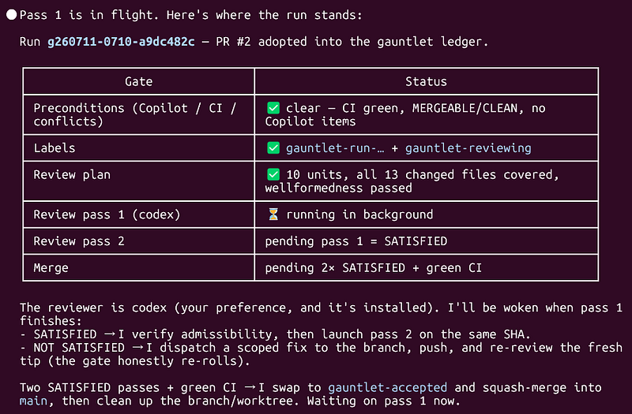
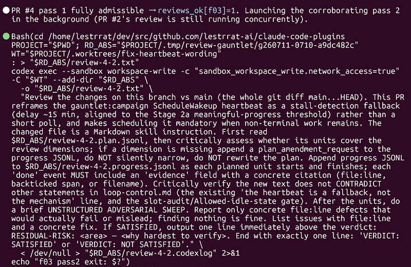
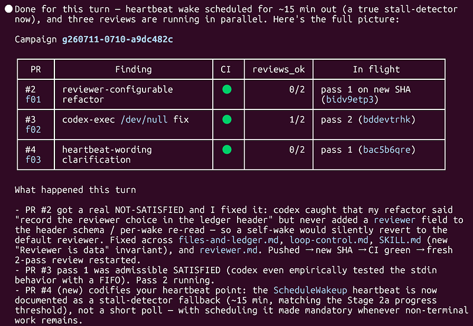
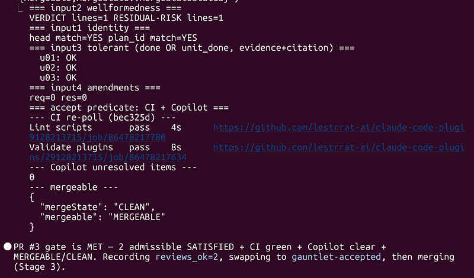
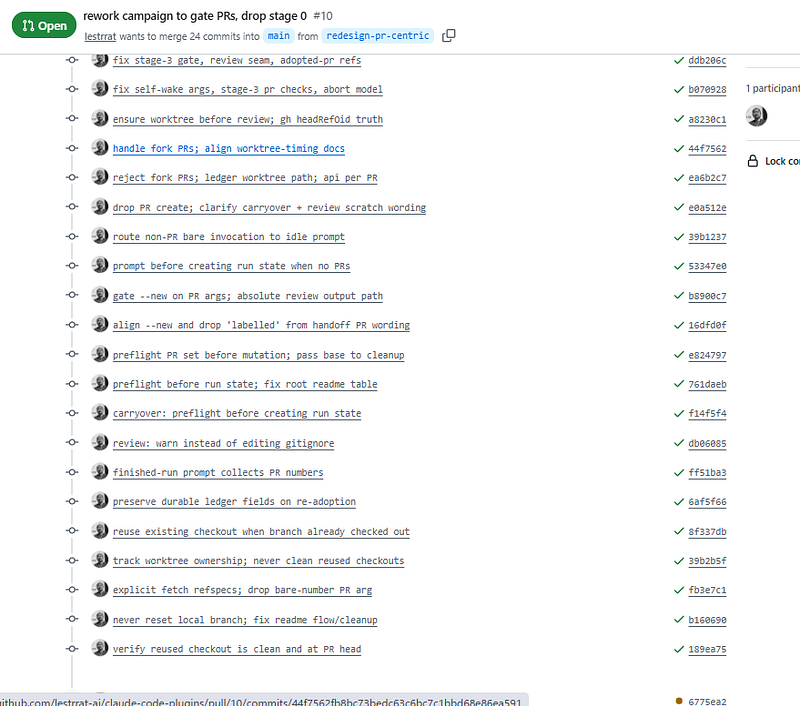

Coding Agents Are Stochastic — So Increase Reliability by Designing Protocol
Coding Agents Are Stochastic — So Increase Reliability by Designing Protocol
TL;DR:
- I want a (relatively) trustworthy workflow for agentic coding, where I could have my hands off driving it.
- Writing features / fixing bugs initially requires user input, but once goals/specifications/requirements are set, seeing it to merge should be autonomous.
- Wrote a Claude Code plugin that provides
/gauntlet:campaignwhich autonomously drives a PR through multiple rounds of reviews and fixes (if need be) until it reaches a threshold of confidence that allows it to merge it.
Contribute to lestrrat-ai/claude-code-plugins development by creating an account on GitHub.github.com
Assumptions and Motivation
Just like most people, I started using coding agents by giving it instructions, seeing what it did, then reacting to it and giving it more instructions. That included reviewing changes.
Over time, I noticed that even when I ran reviews, the agents would occasionally miss relatively easy-to-find problems in the change set. Documentation misalignments, subtly changed assumptions, etc.
What’s happening is that since LLM-based agents are stochastic in nature, finding problems during a single review is left to pure chance.
Every time you ask your agent to review some PR (even if the models that back them up are powerful) there is a non-zero chance of agents completely going blind on specific areas of your code, thereby giving you the go ahead. But had the stars been aligned in a slightly different way, they could have found some major vulnerability or omission.
So what do you do? Run the review multiple times, of course!
Basic Workflow Ends With Two Consecutiv SATISFIED Reviews
/gauntlet:campaign works against a PR. So you would call it via something like /gauntlet:campaign #12 to run it against PR #12. You can tell the agent to fold in more PRs, which opens up the possibility to “pipe” PRs from other skills, or to just say “fold in all PRs for this repository into a gauntlet:campaign”.
Here’s a screenshot right after a PR was added to the campaign (note that the table is not part of the skill — the agent just decided to draw it this time).

The skill also keeps track of current PRs and their review state, and it will automatically loop to check up on progress of each PR. For a given PR, the basic flow for the /gauntlet:campaign skill is as follows:
- For the latest commit ID in the PR, the Reviewer reviews your code and reports with a SATISFIED or NOT SATISFIED (along with individual findings, if applicable)
- If there are findings, the Orchestrator evaluates the review (most of the time it accepts the review, but it checks just in case), and launches a subagent to work on them.
- Back to 1 with another Reviewer.

Termination Condition: Two Consecutive SATISFIEDs
The crux is that a PR merges only after two consecutive SATISFIEDs against the same git commit ID. The commit ID is what makes this meaningful. Any fix produces a new commit, and a SATISFIED verdict on the old code says nothing about the new code. So a NOT SATISFIED leads to a fix, the fix produces a new commit, and the count resets to zero. The Orchestrator is back to needing two clean reviews of an identical tree.


This doesn’t necessarily mean that the probability of missing a problem becomes P squared (where P is the probability of missing a problem through a single review). The two reviews aren’t independent draws: they look at the same diff, and the Reviewers use the same model. However, sampling variance alone means the second pass looks at different things, and in practice it tends to cover areas the first review missed.
One detail in the flow above is that the Reviewer doesn’t have to be the same model that wrote the code. By default it’s Claude reviewing Claude, but it can be configured to use Codex. The default is Claude because I couldn’t realistically expect many people to be subscribed to Max plans for both vendors.
If you can afford it, though, I’d point the Reviewer at a different model. A different model gives you draws that fail in different places, which is a strictly better gate.
Whether you use Claude or Codex for review, the two consecutive SATISFIEDs as termination condition gives me confidence to let the agent merge PRs on my behalf. See the example in Where It Shines for a bit more detail on how it actually improved the quality of PRs. As an aside, I also use Claude as the reviewer when I run out of Codex tokens, and this workflow tends to work so much better for me compared to single reviews.
Where It Shines
The best part of this workflow is that it’s relatively trustworthy, and you can put it into autopilot while you do other stuff.
For example, here’s /gauntlet:campaign being relentless while I dogfooded the review-to-merge process. It started with a single commit, but the gauntlet skill kept finding edge cases and real defects (I suspect the situation was further exacerbated due to the fact that this was instructions against coding agents and not code, which is mechanically verifiable before sending it for review).
The image is from mid-campaign, but when I counted at the end, that was a total of 19 commits (18 additions on top of the initial PR commit). All these commits, and I didn’t so much as type a single instruction.

What’s more, many of these findings came up after the first review came back SATISFIED. This clearly shows the stochastic nature of the agent — review passing once was not enough to assure the correctness/completeness of the PR, and the fact that doing more reviews is the right call.
Where It Breaks Down
This workflow isn’t without its problems.
Turn-Based Review/Fix Is Slow
The most notable is probably the fact that it’s relatively slow. This is for several reasons.
First, it’s basically one commit → one full review, and it’s serialized per PR. That flow just takes time. For example, the dogfooding example where I had a total of 18 additional commits because of the review, that took a grand total of approximately 9 hours.
Of course, if you have multiple PRs, you can run them in parallel, increasing the throughput. But each PR still takes some time to process.
Part of the reason the reviews take so long is because I like to have Codex do the review while Claude Code writes the code. Therefore I have to shell out review processes from Claude, and Codex isn’t exactly lightning fast when its reasoning efforts are set to xhigh .
Token Costs Compound
/gauntlet:campaign is also a token-hog. It takes up a LOT of your tokens! I do NOT recommend you use this workflow unless you have Max plan subscriptions.
That’s just the nature of the beast. DO NOT attempt to use this if you don’t have access to a lot of tokens.
Try It!
Other than those two… I think it’s an extremely useful tool! You probably wouldn’t use it against a single line documentation fix (though you certainly could), but for anything that you just want to have your hands-off, it’s really quite useful.
I’d say it’s best when you combine it with a skill/instruction that generates many tasks. You could say something like:
Drive the effort to make this repository pass 100% of the **** conformance test. For each logical group of gaps, implement a fix, create a PR, and then run them through gauntlet:campaign to see them cross the finish line.
As evidence, it drove development of most of my recent projects.
- github.com/lestrrat-go/jwx (v4: an early version was used to flesh out bugs)
- github.com/lestrrat-go/helium (most of standards conformance bits were implemented using the prototype)
- github.com/lestrrat-ai/claude-code-plugins (dogfooding)
- github.com/lestrrat-3d/sketch
The installation instructions are in the GitHub README.
Contribute to lestrrat-ai/claude-code-plugins development by creating an account on GitHub.github.com
Install my plugin, try it out for a few tasks, and when you’re confident, you should then be able to throw a bunch of tasks at it and safely go to bed knowing that your PRs will be merged after proper reviewing!